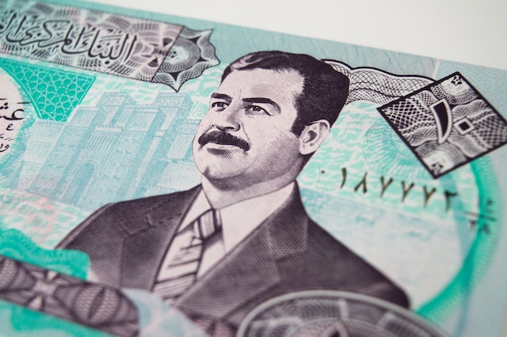
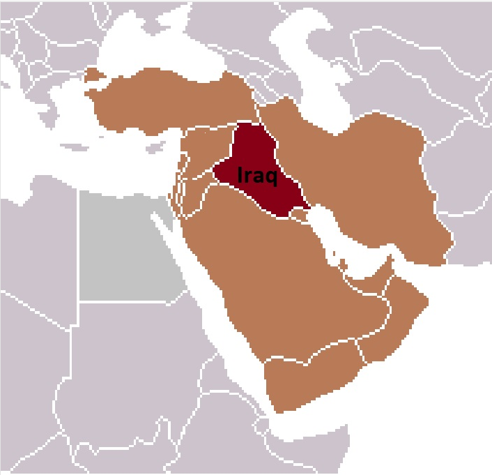

Introduction
The United States´ war against Iraq, also known as the Iraq War or the Second Gulf War, is one of the most controversial armed conflicts in recent history. The United States´ invasion of Iraq, which lasted from 2003 to 2011, costed US taxpayers an estimated $1.7 trillion. It resulted in the death of more than 4,400 US military personnel and tens of thousands of Iraqis (circa 45,000 military and 30,000 civilian casualties). This article primarily seeks to explore the US´ strategic intentions behind the invasion.
The Iraq war was legitimized under the claim that the Iraqi government had produced and prepared Weapons of Mass Destruction under a secretive nuclear arms program. To be fair, Saddam Hussein had boasted about the existence of such a nuclear arms program. But, it is now commonground to assume that such weapons never existed in Iraq and that the United States created a false pretext to give grounds to their coalitionary invasion of a far-away country. This pretense allowed them to garner not only the support of the american public, but also the (material and immaterial) support of Nato and some of its members.
If the US knowingly initiated an unsubstantiated campaign against Iraq, what were their real reasons behind invading Iraq?
The estimated stategic goals behind the US´ invasion of Iraq have been debated and analyzed extensively. One thing that ís clear, is that the Middle East had been an area of interest to hegemonic powers for quite a long time before the Iraq war commenced. Some examples of such foreign interest in control over the Middle East are the Soviet-Afghan War, the Franco-Syrian War and resistance against decolonization movements in the Interbellum of the 20th century.

This is a bank bill depicting Sadam Hussein, the leader of Iraq during the war. In Western Media, Hussein was portrayed as a bad actor holding a grudge against the United States. In hindsight, the elimination of Hussein's regime might have negatively impacted the United States' influence on the Middle East; among many other things, Islamic State of Iraq and the Levant (ISIS) originated in Iraq.
Besides the claim of Iraq´s possession of WMDs (Weapons of Mass Destruction), ´the establishment´ and media in the USA justified the war by suggesting it was a way to eliminate dictator Saddam Hussein´s regime and to pre-emptively strike against terrorism and domestic security threats (on US soil).
However, there is quite the mounting evidence that these explanations were merely pretexts to justify a war that was primarily driven by strategic interests and geopolitical objectives. In other words, the real reason behind the US war against Iraq was, in all likelihood, not WMDs or combating terrorism, but rather, controlling the region's oil resources, enhancing US hegemony, and consolidating its global role as a superpower.
Natural resources
First and foremost, Iraq is home to the world's second-largest oil reserves, estimated to be around 153 billion barrels. With the US dependence on foreign oil, controlling this immense resource would give the US a strategic advantage in the global energy market. It would also facilitate a steady supply of oil to the United States and enable it to control the production, refining, and distribution of oil in the Middle East.
Regional control
Secondly, the US war against Iraq also aimed to enhance its hegemonic position in the Middle East region. By eradicating and subsequently replacing Saddam Hussein, the US hoped to install a pro-Western government that would provide a stable and friendly environment for US business interests to thrive. Additionally, the USA wanted to establish a long-term military presence in Iraq, which would give it a strategic foothold in the region and serve as a base for its military operations against its enemies. The absence of Iraq as a counterweight would enhance Israel's security as an ally in the Middle East region and presumably strengthen their bond and cooperation with Saudi Arabia.

In order to better understand the geostrategic significance of Iraq one should consider its central position within the Middle East as well as its sheer size. This realization helps us to consider our second point about 'regional control'
Consolidation and indicating US prevalence within the Middle East
Finally, the US war against Iraq was aimed at consolidating its global role as a superpower and its ´far-reaching hand´. After the collapse of the Soviet Union, the US emerged as the sole superpower. However, its credibility was tarnished by the 9/11 attacks and the subsequent collapse of the US economy. The US needed a war to reestablish its dominance and project its image as a global superpower that would not hesitate to use force to protect its interests and secure its position in the world. Besides fostering this global and domestic watchdog status, the Iraq War might have been initiated by establishing a rigid foothold in the Middle East to show that the USA had prevailed over Russia in the region; the long-lasting struggle over control over the Middle East between these two entities would then be finalized
Conclusion
In conclusion, the real reason behind the US war against Iraq was probably not WMDs or combating terrorism, but rather, controlling the region's oil resources, enhancing US hegemony, and consolidating and showcasing its hegemonic power in the wake of the Cold War´s resolution. The devastating consequences of the war, including the death of thousands of innocent civilians and the displacement of millions of Iraqis left a scar in the Middle East, and perhaps helps us to better understand why there is an aversion and/or distrust by many Middle Eastern countries against the USA and the West in general.